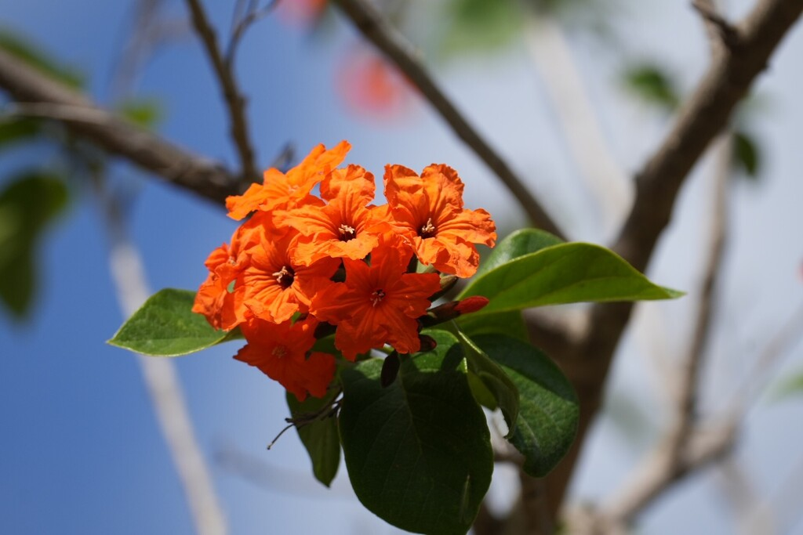

- The Geiger Tree is so associated with Key West that John James Audubon painted his famous White-crowned Pigeon sitting in one during his 1832 Florida expedition — the painting put both the bird and the tree on the ornithological map.
- Its orange-red flowers produce a sweet, edible white fruit used in Caribbean folk medicine.
- Remarkably tolerant of salt spray and poor soil, it's a true Florida Keys native — and the PSBP specimen is at the northern edge of its natural range.
- The Geiger counter has nothing to do with this tree.
Native to the American tropics, ranging from southern Florida and the Bahamas southward throughout Central America and the Greater Antilles.
In Florida it occurs naturally in the Keys and extreme South Florida, making Bradenton and Manatee County near the northern edge of its natural range — which makes the PSBP specimen botanically significant.
- John H. Geiger was a sea captain, harbor master, salvager, and Key West wrecker — at the time Key West was the richest city per capita in the United States, and salvaging shipwrecks was the source of much of that wealth. Audubon visited Geiger's home in 1832 and painted the tree growing in his garden alongside a White-crowned Pigeon.
- The painting became one of his most celebrated Florida works, and the tree carried his host's name ever after.
- The rough, sandpaper-textured leaves have been used in the Caribbean as a literal sanding surface — coarse enough to smooth wood and polish surfaces. This is also one of the best field identification features: run your hand across a Geiger leaf and you'll feel it immediately.
- The Geiger Tree is one of the documented nectar plants for the federally endangered Schaus' swallowtail butterfly — a Florida Keys endemic found nowhere else on earth. Any plant that supports this butterfly has genuine conservation significance.
- Despite being frost-sensitive, the Geiger Tree has naturalized successfully in the Tampa Bay area well north of its historic Florida Keys range — suggesting warming winters may already be shifting the boundaries of South Florida's native range northward.
Of all the trees in this collection, the Geiger Tree may do the most for local wildlife — because it actually belongs here. Its clusters of brilliant orange flowers bloom nearly year-round and are documented nectar sources for hummingbirds, bees, and butterflies — including the federally endangered Schaus' swallowtail.
Birds and wildlife feed on its white fruits, and the dense canopy provides year-round nesting cover.
By seed and layering. Propagation is slow, reflecting the tree's overall slow growth rate.
Clusters of brilliant orange-red trumpet-shaped flowers blooming nearly year-round with peak flowering in spring and summer.
Fleshy, fragrant, 1-to-4-seeded drupe — white to gray oval fruit resembling a small wrinkled plum. Edible, variable flavor. Sometimes called the Sebesten Plum.
Large, dark green, rough and sandpaper-textured on both surfaces — a reliable tactile field ID feature. Oval, up to 6 inches long.
Grayish-brown, somewhat rough and furrowed on mature specimens.
The brilliant orange-red flower clusters are unmistakable throughout the year. Run your hand over a leaf — the rough sandpaper texture is distinctive and memorable. Watch for hummingbirds and the large orange sulphur butterfly at the flowers.
The white fruits are edible but fibrous and variable — better cooked than raw — and it isn't a significant food plant.
It has no known toxicity to people or pets.
The common name Geiger Tree is traditionally attributed to John James Audubon, who named it in honor of John H. Geiger — a Key West harbor master and salvager at whose home Audubon stayed during his 1832 Florida expedition.
The genus Cordia was named for father and son German botanist-physicians Euricius Cordus (1486–1535) and Valerius Cordus (1515–1544).


- © Rhonda Olschefskie (CC-BY-NC), via iNaturalist
- © Joanne Walker (CC-BY-NC), via iNaturalist
- © Denise Sosa (CC-BY-NC), via iNaturalist
- © Ruby Meador (CC-BY-NC), via iNaturalist
- © Austin Sibrian (CC-BY-NC), via iNaturalist